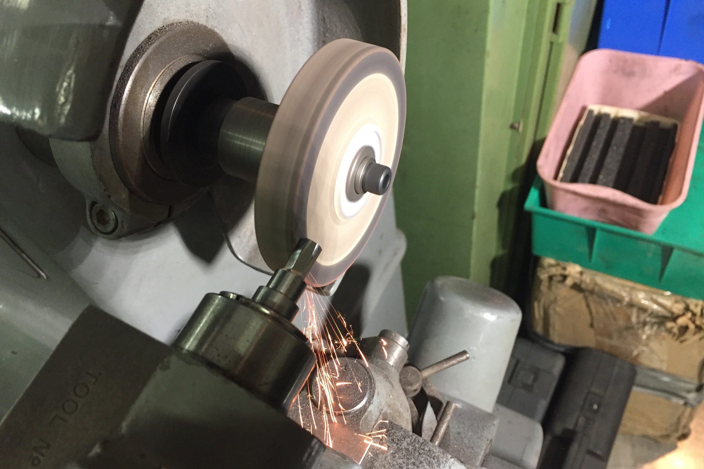
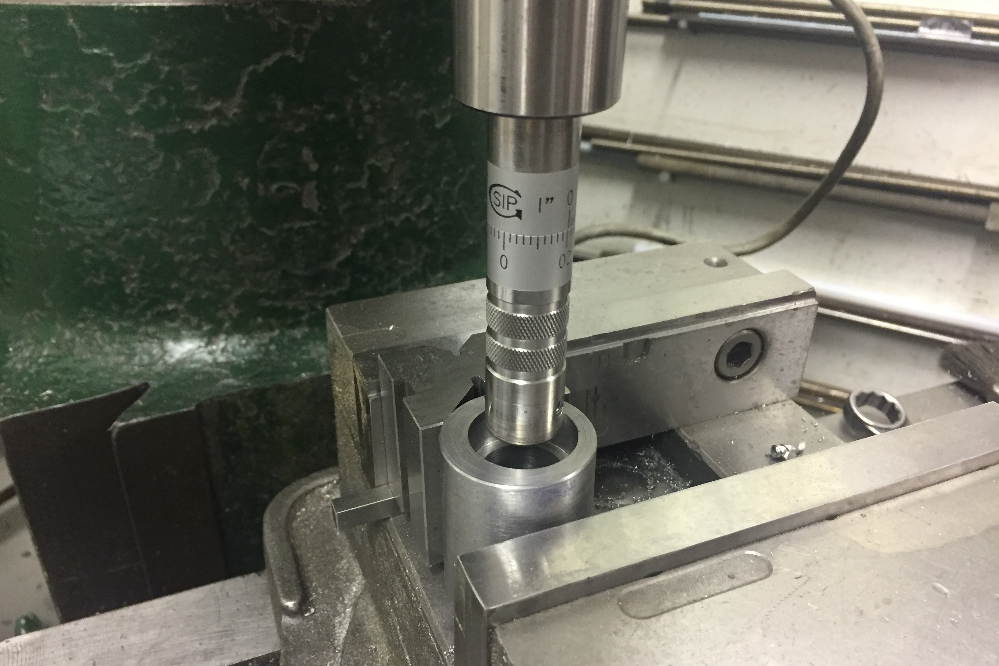
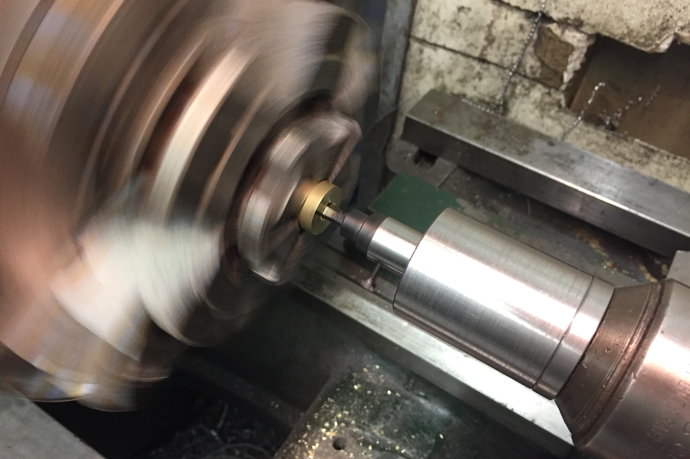

Rotary Broach Holderbr>Spring 2017
Finally a way to make square blind holes
To help with making my own fasteners or similar devices, I build a rotary broach holder. This is fairly simple, a houseing with a oilite bushing supporting a spindle, and a thrust roller bearing at the back to take the thrust load on the spindle. The catch is that the spindle is offset from the center and at a 1 degree angle to the housing. The eccentricity is calculated such that the axis of the spindle intersects the axis of the housing (and shank) at a particular point in front of the tool. When a broach is loaded into the spindle, the tip of the broach should be exactly at that point of intersection. This arrangment allows the broach to "wobble" angularly without running out radially. It is this very particular motion that allows the broach to cut bit by bit.

Grinding the broach itself. This test broach was a 3/16" hex.

Boring the spindle bore to size before pressing in the bushing. Note the angle and the offset.

Broaching a 3/16" hex in brass.